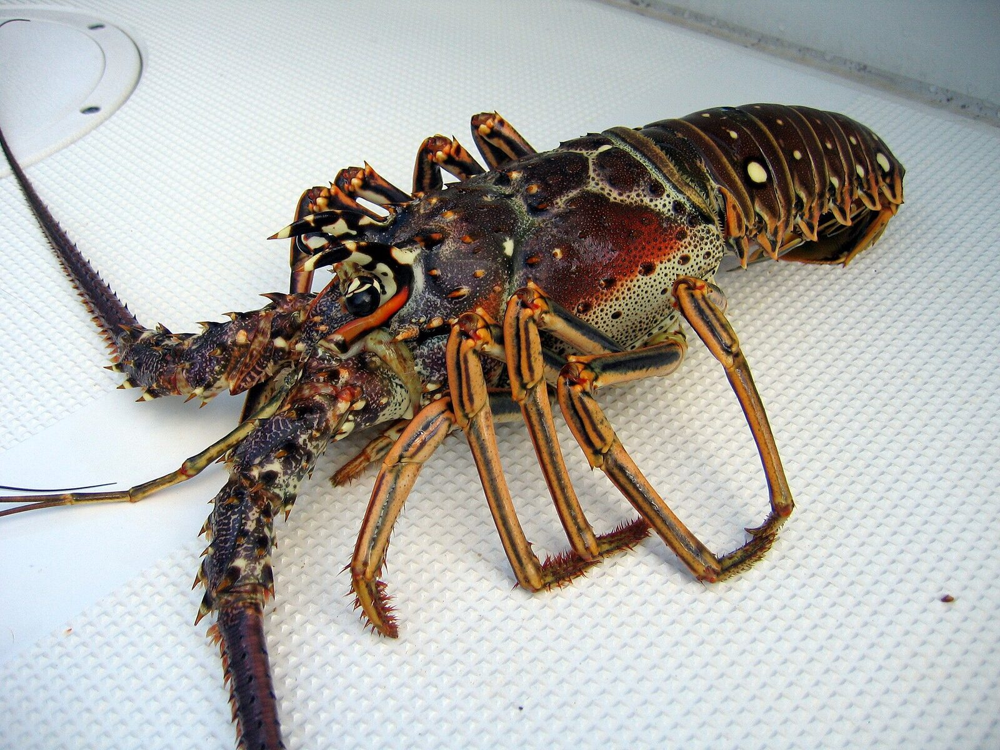

Gear
- Tickle stick and hand net
- Gloves and a lobster gauge
- Mask, snorkel or scuba equipment
- Properly displayed dive flag
Yes—Caribbean spiny lobster can be caught around Marathon. This page covers the legal season, size, bag limit, gear and areas where harvest is prohibited.

Panulirus argus has no large claws. Look for long antennae, a mottled brown-red shell and pale spots on the tail.
August 6 through March 31. Daily and on-water possession limit is six per person.
July 29–30, 2026. Monroe County remains limited to six per person, and night diving is prohibited during sport season.
Lobster must be landed whole. Tail separation in state waters, recreational trapping and possession of egg-bearing lobster are prohibited.
Rules incorporated September 1, 2026 from the FWC July 2026 Florida Saltwater Recreational Fishing Regulations, plus FWC Spiny Lobster Regulations and Florida Keys National Marine Sanctuary zones.